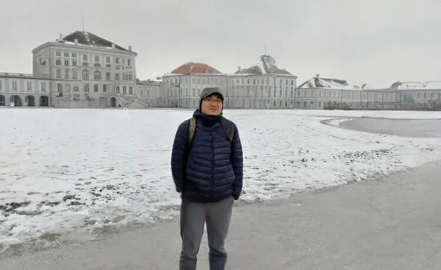
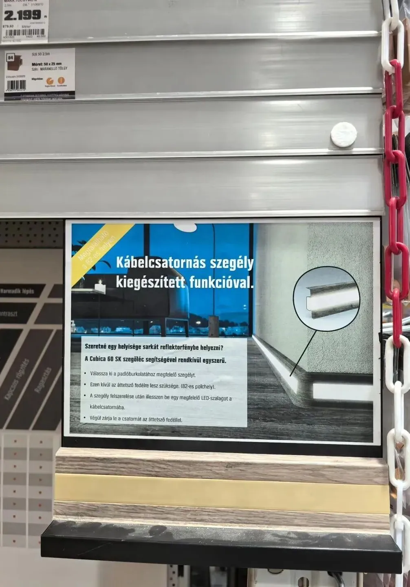
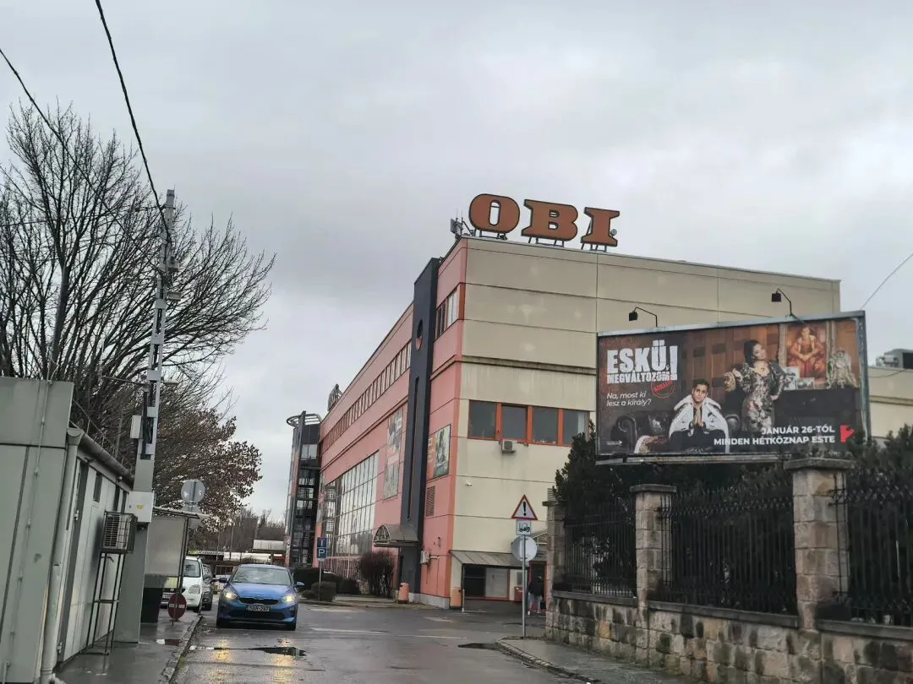
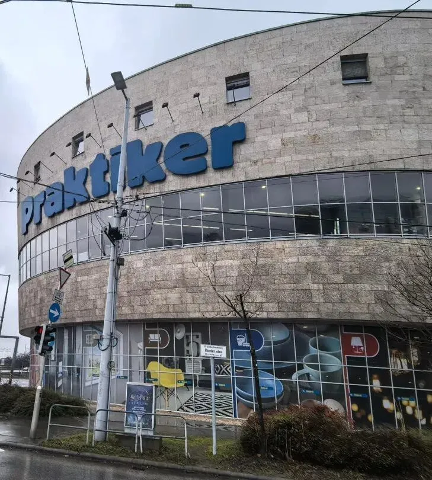
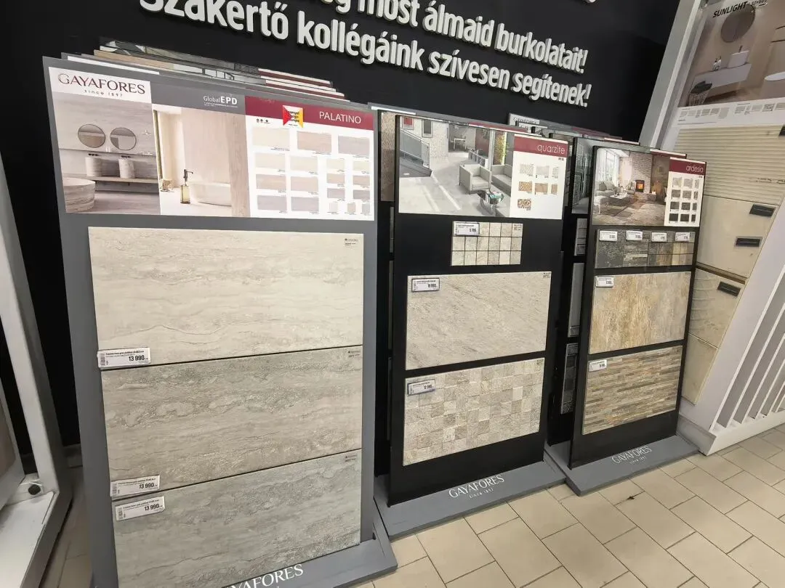
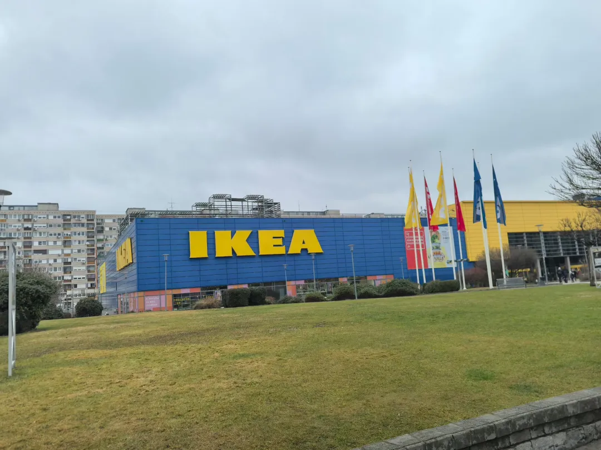
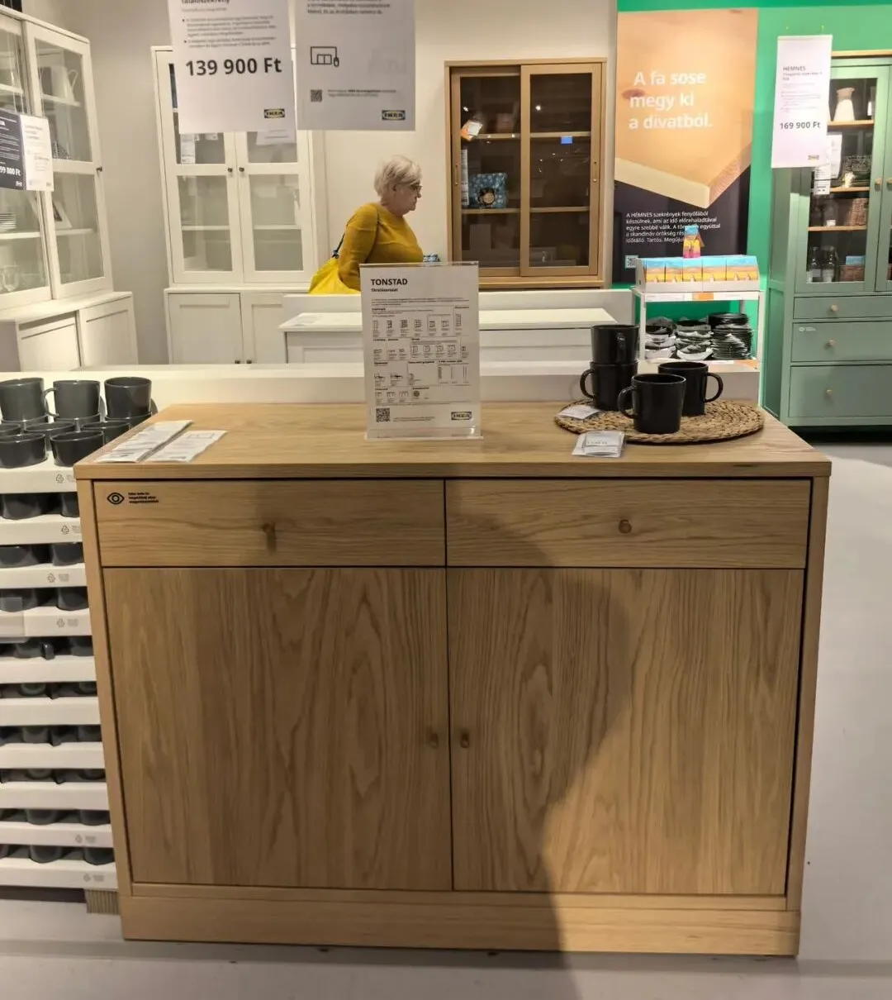
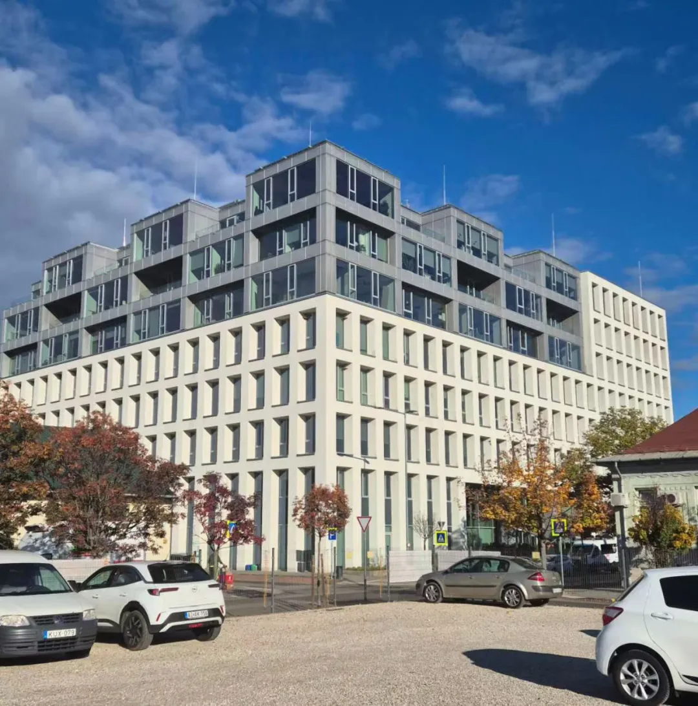
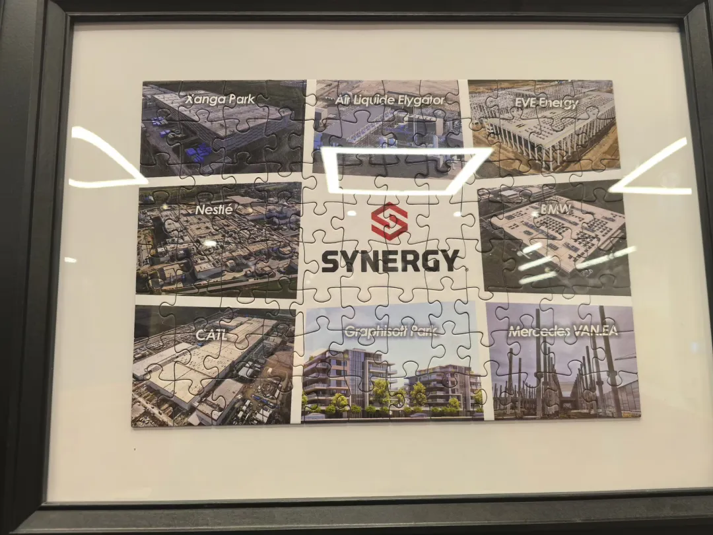

匈牙利产业考察｜中国企业进入中东欧市场的真实落地路径
Hungary field trip — why Central Europe is becoming China brands' first real European base.
2026 开年第一篇 没看风景，没逛景点，就做一件事：沉到市场里，看看一个中国品牌想在这儿站稳，路该怎么走。
2026年初，匈牙利。没看风景，没逛景点，就做一件事：沉到市场里，看看一个中国品牌想在这儿站稳，路该怎么走。
这一圈下来，看了仓库、探了工厂、聊了行家、走了边境。最大的感受是：匈牙利用来做欧洲的"首发站"和"运营枢纽"，正变得越来越靠谱。

一月行程记
我们看见了三个"不一样"的匈牙利。
1. 市场在变，商业模式也在创新
OBI和Praktiker是本地最大的建材家居连锁。在Praktiker门店里，商品超过3万种，从一块瓷砖到花园工具，几乎什么都卖。


本地DIY和家装需求非常旺盛、且品类复杂。OBI的线上销售大概占到5%-10%，这个比例不高，恰恰意味着线上增长的故事才刚刚开始。



但真正的震撼来自宜家（IKEA）。
布达佩斯的宜家门店，一楼是让你慢慢逛的展示区，但另一层，完全是一个为线上订单服务的高效仓储和发货中心。
宜家：一边服务传统客户，一边全力跑通线上模式。宜家把这种测试放在匈牙利而非德国，信号很明显——这里市场成熟度足够，试错成本却更低，模式验证成功后，能迅速复制到西欧。
对中国品牌来说，这意味着匈牙利可以成为一个理想的"出海欧洲模式实验田"。



2. 真正的"本地化"，需要肉身出海
我们拜访了SYNERGY。他们覆盖能源、基建等多领域的业务，让我们看到了以匈牙利为中心、向周边辐射的商业网络。与SYNERGY这类扎根中东欧的工程巨头交流，你会看到项目如何跨区域流动。
世邦魏理仕（CBRE），这家全球最大的商业地产服务商，连续20年在北美销量第一，资产管理规模超过1500亿美元。与他们的对话，直接触及了核心——资本如何看待匈牙利及中东欧市场。
他们提供的全链条服务，从投资、交易到资产管理，解答了一个根本问题：钱从哪里来，合规路径怎么走，资产如何退出。这为实体运营提供了坚实的金融底盘。
真正的本地化，就是与这个生态系统接轨。
3. 匈牙利的角色正在从"通道"变成"枢纽"
过去，中东欧常被看作通往西欧的"过渡地带"。但现在，情况变了。
基于欧盟统一的规则、相对平衡的成本与技能、以及连接西欧与巴尔干的地理位置，匈牙利正吸引越来越多企业将其设为"欧洲总部"。
在这里，你可以完成产品的欧盟标准认证、建立辐射周边的中小型仓储、测试符合欧洲消费者的营销模式。站稳之后，再向消费力更强的西欧市场进取，会从容许多。
它不再只是销售终点，而是企业出海欧洲第一站、实验田和运营中心。
越来越多中国公司，把这里当成第一个真正的"海外分支"，在这里完成产品本土化适配、建立小仓、测试商业模式，站稳了，再往更主流的市场去。
这段经历，远非终点
一月的探索为我们拼出了关键图块：货架上的需求、门店里的模式、仓库与口岸的动线、专业网络中的门道。我们带回了可落地的参照，也留下了待深挖的问题。
要寻找答案，必须走向更远处、联结更多人。
于是，三月的行程应势而定——这次，我们要把点连成线。
三月行程预告
我们将带着一月的见闻，去连接更广阔的生态：
匈牙利（布达佩斯）：匈牙利投资促进局 (HIPA)、中国驻匈牙利大使馆经商处、匈中经济商会、匈牙利中资企业商会。
塞尔维亚（贝尔格莱德）：塞尔维亚投资与出口促进局 (SIEPA)、中国驻塞尔维亚大使馆经商处、塞尔维亚工商会 (PKS)、河钢塞钢等中资企业/工业园。
我们想探寻：能否构建一条 "匈牙利（制造与设计）+ 塞尔维亚（政策与成本）" 的协同通道？为中国品牌进入这一区域，提供更灵活、更有纵深的落地方案。
若您对匈牙利或中东欧市场有具体疑问，欢迎留言。
您的问题，或许正是我们下一程的探索方向。
本文内容整理自海鑫汇海外考察记录，首发于海鑫汇官方公众号（2026年2月）。 查看公众号原文 →